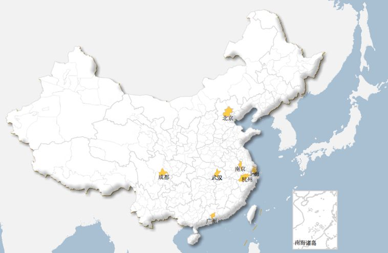
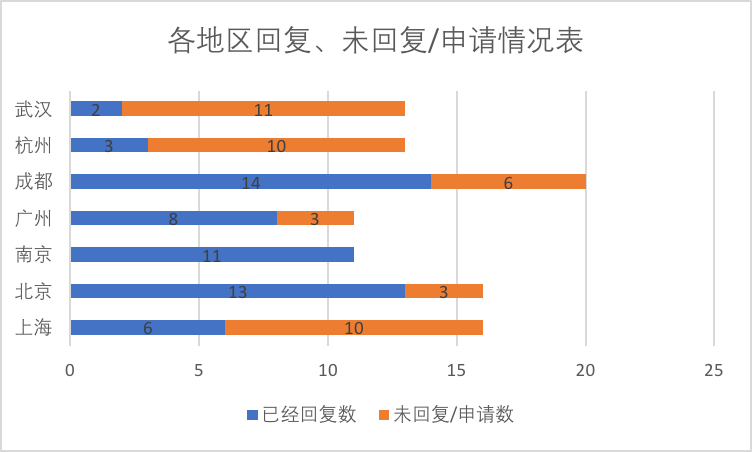
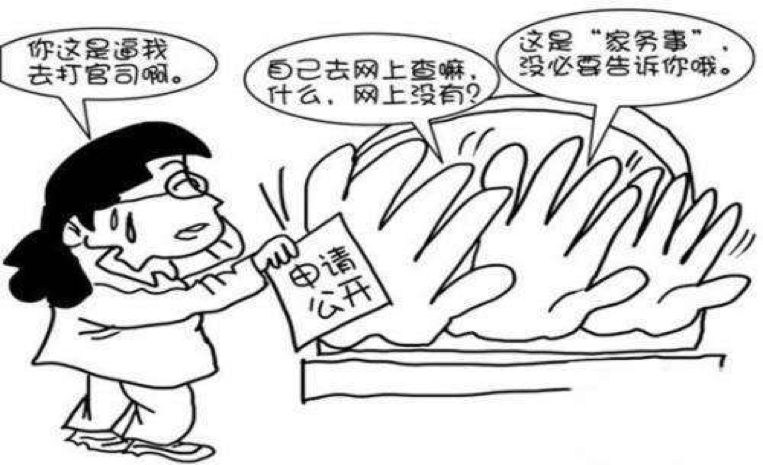

全面放开二胎生育政策后，女性的就业形势面临更加严峻的考验。全国妇联的一项调查显示，超过八成的女大学生受到过一种或多种招聘性别歧视。在生育政策调整的过程中，作为监管部门的人力资源和社会保障局（以下简称“人社局”），必须将消除女性就业歧视现象作为一项重要任务来抓。严格按照劳动法的相关规定，推动实现更加公平的就业，切实保障她们在婚恋、生育等方面的权益。对于明里暗里对女性就业设置障碍、大搞歧视的企业必须予以严惩，增加实施歧视的成本。只有如此，在更加公平和规范的就业环境下，女性的劳动权和婚恋生育权益才能得到切实保障。
调查范围和目的
为了研究不同城市人社局的履职情况，本次调查选取了7个一线及新一线城市的人社局，通过申请政府信息公开的方式了解Ta们对就业性别歧视案件的处理办法，旨在了解这些人社局受理就业性别歧视案件的情况，有否遵循《就业促进法》、《中华人名共和国劳动法》和《劳动保障监察条例》的相关规定对企业给予警告或者处罚。本报告希望通过对现有人社局工作成果的总结，展望未来处理就业性别歧视的改进方法，从普通公民的角度探讨我们如何保护自身的权益，为消除就业性别歧视出一份力。

图：本次调查的7个城市
在调查方法上，我们采取网上和纸质申请的形式，向7个一线及新一线城市的人社局申请公开相关信息，了解Ta们在过去10年中受理就业性别歧视举报的情况、Ta们处理此类案件的依据和办法以及是否将消除就业性别歧视纳入日常工作的范围。我们对各人社局是否进行积极的处理进行甄别，分析了它们取得的成果和需要改进之处。

采用这种方法进行人社局作为情况的研究，仅能从各部门愿意公开的信息中窥探现有的处理方法和手段，无法完全得知整改的有效程度或长期影响。但是，我们希望通过向人社局申请信息公开的方式，表达我们对于此议题的关切，和支持有关部门努力遵循相关法律进一步消除就业性别歧视的决心。
歧视标准和认定
1958年国际劳工组织通过的《关于就业和职业歧视公约》的规定中首先提出，“就业中的性别歧视”就是基于性别的任何区别、排斥或特惠，“其后果是取消或损害就业方面的机会平等或待遇平等。”
在《消除一切针对妇女歧视公约》里，“对妇女的歧视”一词指基于性别而作的任何区别、排斥或限制，其影响或其目的均足以妨碍或否认妇女，不论已婚未婚，在男女平等的基础上认识、享有或行使在政治、经济、社会、文化、公民或任何其Ta方面的人权和基本自由。
在我国法律中，《就业促进法》、《妇女权益保障法》均明确提出：“用人单位不得已性别为由拒绝录用妇女，或者提高对妇女的录用标准。”
基于此在招聘表中要求“男性”、“男性优先”、“适合男性”或者“建议男性报考”等在性别方面做出了明显倾向性表述，提出了与工作本身无关的要求，因此认定为性别歧视。同理，要求“女性”、“女性优先”等也属于性别歧视。
人社局回复内容总结（以区/县为单位）
1. 上海
序号 | 回复的区县 | 回复内容 |
1 | 嘉定 | 人社局对招聘中存在性别歧视的用人单位责令限期整改，逾期未整改的处以2000元以上2万元以下的行政处罚。就业性别歧视属于劳动保障监管投诉举报受理范围，已纳入劳动检查监管工作中。嘉定区人社局无其Ta的特别安排。 |
2 | 奉贤 | 同上 |
3 | 宝山 | 同上 |
4 | 徐汇 | 同上 |
5 | 松江 | 同上 |
6 | 虹口 | 同上 |
7 | 金山 | 同上 |
8 | 闵行 | 同上 |
9 | 青浦 | 同上 |
2. 北京
序号 | 回复的区县 | 回复内容 |
1 | 延庆 | 用人单位违反《人才市场管理规定》，以性别为由拒绝聘用或者提高聘用标准的，由县级以上政府人事行政部门责令改正；情节严重的，并处10000元以下罚款。招聘中的性别歧视已纳入正常监管范围。申请的“监管工作计划和工作安排”属于我单位在日常工作中制定的内部管理信息，不属于应当公开的政府信息。 |
2 | 东城 | 招聘中的性别歧视已纳入正常监管范围。您申请的“监管工作计划和工作安排”属于我机关在日常工作作中制定的内部管理信息，不属于应当公开的政府信息。 |
3 | 平谷 | 用人单位违反《人才市场管理规定》，以性别为由拒绝聘用或者提高聘用标准的，由县级以上政府人事行政部门责令改正；情节严重的，并处10000元以下罚款。招聘中的性别歧视已纳入正常监管范围。申请的“监管工作计划和工作安排”属于我单位在日常工作中制定的内部管理信息，不属于应当公开的政府信息。 您要求公开的“2008年至2018年历年用人单位招聘过程中的性别歧视投诉、举报、立案、受理以及处罚的案件数量”因设计加工汇总，不属于政府信息公开的范围，不予提供。举报受理流程已在平谷区人社局网站公开。 |
4 | 丰台 | 用人单位违反《人才市场管理规定》，以性别为由拒绝聘用或者提高聘用标准的，由县级以上政府人事行政部门责令改正；情节严重的，并处10000元以下罚款。招聘中的性别歧视已纳入正常监管范围。申请的“监管工作计划和工作安排”属于我单位在日常工作中制定的内部管理信息，不属于应当公开的政府信息。 您要求公开的“2008年至2018年历年用人单位招聘过程中的性别歧视投诉、举报、立案、受理以及处罚的案件数量”因设计加工汇总，不属于政府信息公开的范围，不予提供。举报受理流程已在丰台区人社局网站公开。 |
5 | 房山 | 我们严格依据《中华人民共和国就业促进法》第二十六和二十七条，对用人单位提供的招聘信息中体现出违反以上条款内容的，我们对用人单位进行现场普法，并要求用人单位及时删除违规内容并加以改正。房山区未查询到用人单位在招聘中涉嫌性别歧视的举报和投诉。招聘中的性别歧视已纳入正常监管范围。具体工作安排与你所需政府信息的用途（生活、查验自身相关信息）无关。 |
6 | 密云 | 用人单位违反《人才市场管理规定》，以性别为由拒绝聘用或者提高聘用标准的，由县级以上政府人事行政部门责令改正；情节严重的，并处10000元以下罚款。招聘中的性别歧视已纳入正常监管范围。申请的“监管工作计划和工作安排”属于我单位在日常工作中制定的内部管理信息，不属于应当公开的政府信息。 您要求公开的“2008年至2018年历年用人单位招聘过程中的性别歧视投诉、举报、立案、受理以及处罚的案件数量”因设计加工汇总，不属于政府信息公开的范围，不予提供。举报受理流程已在平谷区人社局网站公开。 |
7 | 海淀 | 同上 |
8 | 大兴 | 同上 |
9 | 怀柔 | 同上 |
10 | 通州 | 同上 |
11 | 西城 | 同上 |
12 | 北京经济技术开发区管委会 | 同上 |
13 | 朝阳 | 您要求公开的“2008年至2018年历年用人单位招聘过程中的性别歧视投诉、举报、立案、受理以及处罚的案件数量”因设计加工汇总，不属于政府信息公开的范围，不予提供。举报受理流程已在平谷区人社局网站公开。申请的“监管工作计划和工作安排”属于我单位在日常工作中制定的内部管理信息，不属于应当公开的政府信息。 |
3. 南京
序号 | 回复的区县 | 回复内容 |
1 | 六台 | 您申请公开的信息不存在或不属于政府信息，故不予公开。 |
2 | 鼓楼 | 在自《就业促进法》生效以来，我局未收到过关于投诉用人单位在招聘中涉嫌性别歧视的案件。对职业中介机构发布包含歧视性内容的就业信息做了禁止性规定，劳动行政部门可以责令整改，并可处一万元以下的罚款。除上述两个事项以外，对其Ta就业歧视行为的举报投诉，劳动保障监察机构没有受理和处理的法律依据，但是可以依据《劳动保障监察条例》第十条之规定，向用人单位和职业中介就宣传有关禁止就业歧视的法律法规，督促其贯彻执行，必要时可以发出《劳动保障监察建议书》。 我局劳动保障监察机构根据《劳动保障监察条例》，已将就业歧视纳入监察监管，并根据《江苏省人民政府办公厅关于建立双随机抽查机制加强事中事后监管的通知》规定要求，将就业歧视纳入了随机抽查事项清单中。 |
3 | 雨花台 | 08-17年收到两起“只招男性，男性优先”等涉嫌性别歧视的举报案件，均已受理立案。经调查处理并责令改正，涉案单位均按要求改正，删除招聘信息中有关性别歧视内容。我局在日常巡查，专项检查及处理投诉举报案件时，加大对用人单位的普法力度，积极督促用人单位在招用人员、职业中介机构在从事职业中介活动时向劳动者提供平等的就业机会与公平的就业环境。对符合受理条件的投诉和举报，自接到投诉和举报之日起5个工作日之内立案，60个工作日内完成调查，做出行政处罚或撤销立案的决定；情况复杂的经劳动保障行政部门负责人批准，可以延长30个工作日。 |
4 | 秦淮 | 未收到过举报，其Ta同上。 |
5 | 玄武 | 收到过1起用人单位在招聘中涉嫌只招聘男性，进行了调查处理，涉案单位对招聘的户外摄影师是否属于国家规定的不适合妇女的工种或者岗位不明的情况下，主动取消了招聘中的性别要求，我局书面向举报人进行了处理情况反馈。 |
6 | 溧水 | 不在政府信息公开范围内，故不予公开。 |
7 | 浦口 | 我局可以依据《劳动保障监察条例》第十条规定，向用人单位和职业介绍中介机构宣传有关禁止就业歧视的法律法规，督促其贯彻执行国家劳动保障法律法规，必要时可以发出劳动保障监察建议书。 |
8 | 建邺 | 共收到5起，均已责令改正，涉案单位均按要求改正，取消了招聘中的性别要求。其Ta同雨花台之答复。 |
9 | 高淳 | 未收到过此类举报。但有具体的窗口负责处理性别歧视案件：将立案处理，行政处罚等。 |
10 | 江宁 | 大致同雨花台之答复。已将性别歧视纳入日常监管工作中，通过劳动监察对我区用人单位的日常巡查工作，开展普法工作。与区就业，区妇联，区工会常态化的联合开展监管监察。在各类招聘会现场设置相关咨询服务和对外公布投诉电话，依法惩处招聘录用中的性别歧视行为。 |
11 | 栖霞 | 一、2008年至2017年期间，本机关共收到1起关于用人单位在招聘中涉嫌性别歧视的举报信件，进行了调查处理，并责令单位立即改正，涉案单位按要求进行了改正，取消了招聘中的性别要求。 二、我机关处理该类招聘中性别歧视投诉和举报的流程是依据《劳动保障监察条例》、劳动保障部关于实施《劳动保障监察条例》等相关规定来进行： （1）对符合受理条件的投诉和举报，在接到投诉之日起5个工作日内依法受理，并于受理之日立案查处； （2）对违反劳动保障法律、法规或者规章的行为的调查，应当自立案之日起６０个工作日内完成；对情况复杂的，经劳动保障行政部门负责人批准，可以延长３０个工作日； （3）劳动保障行政部门立案调查完成，作出行政处罚（行政处理或者责令改正）或者撤销立案决定。 三、本机关在日常巡视检查、专项检查及举报、投诉案件办理过程中，始终坚持严格执法，并督促本辖区内企业在招用人员、职业中介机构从事职业中介活动时，应当向劳动者提供平等的就业机会和公平的就业条件，不得实施就业歧视，维护群众的合法权益。 |
4. 广州
序号 | 回复的区县 | 回复内容 |
1 | 南沙 | 申请的信息不是现有的， 需要汇总加工或重新制作，故不公开。 |
2 | 天河 | 不属于政府信息，可自行上网查阅法律条例。 |
3 | 海珠 | 申请的信息不是现有的， 需要汇总加工或重新制作，故不公开。 |
4 | 番禹 | 已将性别歧视纳入日常监管。不公开其Ta信息因为与行政执法有关，公开后可能会影响检查、取证等执法活动或会威胁个人生命安全的的政府信息；且需要重新汇总，不是现有的信息。 |
5 | 白云 | 申请的信息不是现有的， 需要汇总加工或重新制作，故不公开。可自行上网查阅法律条例。 |
6 | 荔湾 | 不属于政府信息。 |
7 | 越秀 | 信息不存在，可自行上网查阅法律条例。 |
8 | 黄埔 | 申请的信息不是现有的， 需要汇总加工或重新制作，故不公开。可自行上网查阅法律条例。 |
5. 成都
序号 | 回复的区县 | 回复内容 |
1 | 崇州 | 未收到投诉和举报，信息不存在。 |
2 | 彭州 | 收到过1起用人单位在网上发布的招聘启示有性别歧视的嫌疑，但经调查该企业在实际招聘中无此行为。且单位短期便撤下了有问题的招聘启示。立案0起，处罚0起。并未制定专门针对性别歧视的监管工作计划。 |
3 | 成华 | 无相关信息，已纳入日常监管工作。 |
4 | 新都 | 对用人单位责令整改，行政处罚；没有违法所得的处以10000元以下罚款，有违法所得的处以违法所得三倍的罚款，但不高于30000元。 |
5 | 武侯 | 无受到投诉举报。责令整改，逾期未整改的可处以2000元以上2万元以下的罚款。 |
6 | 温江 | 信息不予公开，相关法规可以在网络上查阅。 |
7 | 简阳 | 未收到投诉和举报，信息不存在。 |
8 | 郫都 | 不予汇总收集，故不公开。相关法规可以在网络上查阅。对性别歧视已纳入日常监管工作。 |
9 | 金堂 | 同上 |
10 | 金牛 | 未收到投诉举报。相关法规可以在网络上查阅。 |
11 | 锦江 | 受到投诉3起，用人单位皆进行了整改。我局对其进行了劳动保障法律法规的宣讲。 |
12 | 青白江 | 政府信息不存在。 |
13 | 青羊 | 与2017年收到过1起投诉，用人单位进行了整改。我局对其进行了劳动保障法律法规的宣讲。对性别歧视已纳入日常监管工作。责令整改，逾期未整改的可处以2000元以上2万元以下的罚款。 |
14 | 龙泉驿 | 未收到举报，对性别歧视已纳入日常监管工作。 |
15 | 邛崃市 | 申请1 信息不存在；申请2信息不属于政府信息；申请3属于公开范围，以附件形式告知。 |
16 | 双流区 | 2008年至今我局未接到关于性别歧视案件投诉举报，也未发现类似行为。 我局严格执行劳动保障法律法规，关于性别歧视案件处罚依据和标准均严格依照法律法规。（投诉举报流程参考其Ta案件。） 对依法应当由劳动保障行政部门受理的案件均纳入管理，一旦发现违法行为将依法查处。 |
6. 杭州
序号 | 回复的区县 | 回复内容 |
1 | 下城 | 共受到投诉4起，均立案整改。情节严重的处以10000元以下罚款。立案60个工作日内完成调查。情节复杂的可延长30个工作日。 |
2 | 江干 | 共受到投诉12起，均立案整改。拒不改正的可处以500元以上5000元以下罚款。就业性别歧视是我局监管工作的重点，纳入“双随机已公开”的监管范围。 |
3 | 萧山 | 收到投诉数量为零。拒不改正的可处以500元以上5000元以下罚款。就业性别歧视已纳入日常监管。 |
7. 武汉
序号 | 回复的区县 | 回复内容 |
1 | 江汉 | 不属于政府信息公开范畴，政府不承担汇总之 责。 |
2 | 洪山 | 不承担汇总之责，相关法律法规可自行查阅。 |
分析总结
根据我们此次调研收到的人社局回复信息，我们发现接近7成的人社局都表示此类信息不存在，或因需要重新汇总加工为由无法公开。在这些以需要重新汇总收集为由拒绝公开的回复中，我们只能推测Ta们收到过此类投诉，但因未严肃处理，或处理的比较随便，所以并不能给公众一个成文的总结。
我们做出此推测是因为如果这些人社局从未接触过此类投诉或举报，简单陈述即可，又何来重新汇总之重担呢？事实上，接近2成的人社局明确表示Ta们从未收到过关于性别歧视的举报。我们认为，这个现象至少说明了大部分人社局目前对于就业性别歧视的现象并没有足够的重视，甚至无法向公众解释收到此类举报的大概频率、性质和处理结果。
大部分人社局在回信中表示，将整顿就业性别歧视纳入日常监管范畴，但日常监管的事项又为何没有一个简单的记录和收集呢？我们认为，人社局应该建立一个简单易懂的投诉机制，网络平台或投诉窗口亦可，这样方便公众和人社局进行沟通，人社局也可以在此基础上进行归纳总结，以便更有效的开展长期工作。

而有一成左右的人社局给出的答复还是相对令人信服的，比如南京雨花台区、建邺区和玄武区在答复中明确告知了在一定时间段中收到的投诉数量，并且汇报了是否立案调查，用人单位是否及时整改（下架带有性别歧视语言的招聘广告），是否处以罚款等。有些人社局还介绍了Ta们向涉事用人单位进行普法的情况。我们有理由相信，Ta们给出的数字和答复反映了Ta们真正的把就业性别歧视纳入了Ta们日常监管的范畴，对于收到的群众投诉积极处理并有所记录，进行后续跟进。Ta们应当作为人社局处理该事宜的表率，并向更多的人社局推广Ta们的做法和办事规划。
另外，在此次调研中，我们发现北上广的区县人社局并没有走在整改就业性别歧视的前列。北上广人社局给出的答复大都是泛泛而谈，而完全没有提及工作中遇到的具体投诉，举报案例，或日常工作中进行的普法行动。北上广人口众多，是就业招聘的高发区，也是很多年轻人向往的工作城市，当地的人社局更应该承担起监管的职责，进行有规模有效率的监察工作。如今网络如此发达，大部分的招聘启示都刊登在网络上，人社局也可以较为轻松的查找到违规的招聘启示。我们在此呼吁全国的人社局除了积极处理群众的举报和投诉，更应该承担起更主动的监管职责，在网络上进行日常的排查。
当然在招聘行为中，更多的性别歧视存在于事实招聘中。用人单位可能不会在招聘启示上明确表明只招收男性，但在面试后便会不再考虑女性求职者。对于这类隐形的性别歧视监察起来更为艰难，但我们也希望人社局可以有所警惕，理解这种形式的就业性别歧视，并逐渐开展更为深层次的监管。
作者简介
小唐同学，UC Berkeley法律专业在读。从法律的角度关注社会民生，了解公共政策。为需要的人陈情，提供力所能及的法律援助。